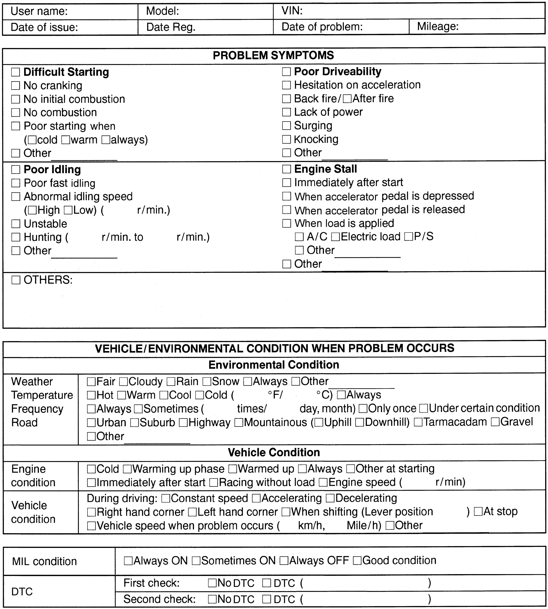

1A
| Engine and Emission Control System Check |
Refer to the following items for the details of each step.
| Step | Action | Yes | No |
|---|---|---|---|
| 1 |
Customer complaint analysis
1)Perform customer complaint analysis.
Was customer complaint analysis performed?
|
Go to Step 2.
|
Perform customer complaint analysis.
|
| 2 |
DTC / freeze frame data check, record and clearance
1)Check for DTCs (including pending DTCs).
Is there any DTC(s) / freeze frame data?
|
Print DTCs and freeze frame data or write them down and clear them referring to DTC Clearance:M16A, and go to Step 3.
|
Go to Step 4.
|
| 3 |
Visual inspection
1)Perform visual inspection.
Is there any faulty condition?
|
Repair or replace defective part, and then go to Step 11.
|
Go to Step 5.
|
| 4 |
Visual inspection
1)Perform visual inspection.
Is there any faulty condition?
|
Repair or replace defective part, and then go to Step 11.
|
Go to Step 8.
|
| 5 |
Trouble symptom confirmation
1)Check trouble symptom.
Is trouble symptom identified?
|
Go to Step 6.
|
Go to Step 7.
|
| 6 |
Rechecking and recording DTC / freeze frame data
1)Recheck for DTC and freeze frame data.
Is there any DTC(s)?
|
Go to Step 9.
|
Go to Step 8.
|
| 7 |
Rechecking and recording DTC / freeze frame data
1)Recheck for DTC and freeze frame data.
Is there any DTC(s)?
|
Go to Step 9.
|
Go to Step 10.
|
| 8 |
Engine basic inspection and engine symptom diagnosis
1)Check and repair.
Are check and repair complete?
|
Go to Step 11.
|
Check and repair defective part(s), and go to Step 11.
|
| 9 |
Troubleshooting for DTC
1)Check and repair according to applicable DTC troubleshooting.
Are check and repair complete?
|
Go to Step 11.
|
Check and repair defective part(s), and go to Step 11.
|
| 10 |
Intermittent problem check
1)Check for intermittent problems.
Is there any faulty condition?
|
Repair or replace defective part(s), and go to Step 11.
|
Go to Step 11.
|
| 11 |
Final confirmation test
1)Clear DTC if any.
2)Perform final confirmation test.
Is there any problem symptom, DTC or abnormal condition?
|
Go to Step 6.
|
End.
|
Step 1: Customer Complaint Analysis
Record details of the problem (failure, complaint) and how it occurred as described by the customer. For this purpose, use of an inspection form as shown will facilitate collecting information required for proper analysis and diagnosis.
NOTE:
This form is a standard sample. It should be modified according to characteristic of each market.
Customer questionnaire form (Example)

 "Expand image")
Step 2: DTC / Freeze Frame Data Check, Record and Clearance
First, check DTC (including pending DTC). 
If DTC is indicated, print it and freeze frame data or write them down and then clear them.
Steps 3 and 4: Visual Inspection
As a preliminary step, perform visual check of the items that support proper function of the engine.
Step 5: Trouble Symptom Confirmation
If there is no DTC in Step 2:
Based on information obtained in Step 1: Customer Complaint Analysis and Step 2: DTC / Freeze Frame Data Check, Record and Clearance, check trouble symptoms.
If there is any DTC in Step 2:
Recheck DTC according to “DTC Confirmation Procedure” described in each DTC troubleshooting.
Steps 6 and 7: Rechecking and Recording DTC / Freeze Frame Data
Refer to DTC Check:M16A for checking procedure.
Step 8: Engine Basic Inspection and Engine Symptom Diagnosis
1)Perform engine basic inspection.
2)If there is no faulty part found in inspection procedure of “Engine Basic Inspection”, perform Engine Symptom Diagnosis:M16A based on symptom found in vehicle checking in the following steps.
•Customer complaint analysis
•Trouble symptom confirmation
•Trouble symptom confirmation
Step 9: Troubleshooting for DTC
Perform applicable DTC troubleshooting and repair or replace faulty parts.
Step 10: Intermittent Problem Check
If there is no DTC in Step 2:
Check for intermittent problem.
If there is any DTC in Step 2:
Check parts related to detected DTC (e.g. wire harness, connector, etc.).
Step 11: Final Confirmation Test
Check that the problem symptom has gone and engine is free from any abnormal conditions. If what has been repaired is related to DTC, clear DTC once, perform DTC confirmation procedure and check that no DTC is indicated.